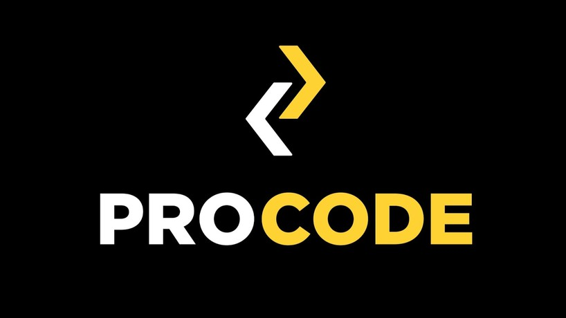

На сегодня ProCode готовит как для себя, так и специалистов на заказ различных IT компаний-партнёров. Курс стартует всего 2-3 раза в год.
Программа построена таким образом, чтобы можно было обучаться на курсах javascript с нуля или усовершенствовать уже имеющиеся навыки. На курсе собран полный стек актуальных инструментов, который при необходимой практике может решить задачи высокого уровня — от проектирования web-интерфейса до создания бизнес-логики взаимодействия браузера с серверной частью приложения.
Школа front-end разработки ProCode использует в обучении авторскую программу прогрессивного обучения. За основу взяты практики MIT( Massachusetts Institute of Technology) — ТОП-1 в рейтинге лучших технических университетов мира. Отличительная черта курсов — большая концентрация на практике, у нас нет 100% лекционных занятий.
